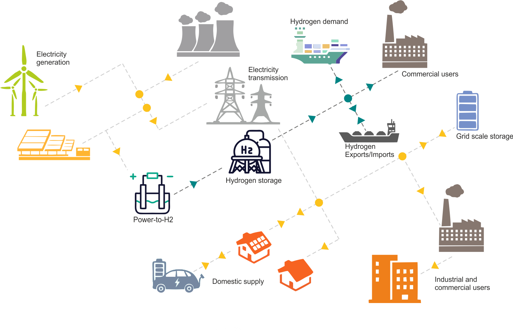

Overview#
The optimized Hybrid Systems for Energy and Market management (oHySEM) model is a state-of-the-art Python library designed for the optimization of hybrid renewable energy systems, particularly hybrid virtual power plants (H-VPPs), in short-term electricity markets. Developed with a focus on efficient energy management, oHySEM also enables strategic decisions regarding the location and sizing of new energy assets, ensuring optimal system design and market participation.
By integrating renewable energy sources like Solar PV, Wind, and CCGT with hydrogen-based energy storage and battery systems, oHySEM allows H-VPP to operate as a unified, flexible entity in various electricity markets. The model helps users maximize operational efficiency, profitability, and the overall performance of hybrid systems by dynamically optimizing energy dispatch, storage, and market bids.
{kind=link}
Hybrid Systems for the Energy Transition#
As energy systems increasingly incorporate hybrid resources, oHySEM plays a pivotal role by enabling users to design, operate, and optimize their hybrid virtual power plants. Whether managing existing assets or planning the location and sizing of new energy assets, the model provides essential decision support tools to balance renewable energy generation, hydrogen as a long-term storage solution, and battery systems for short-term energy flexibility.
The model addresses uncertainties inherent in renewable energy production and market conditions, making it ideal for both operational optimization and strategic asset planning.
Optimized Scheduling, Operation, and Asset Design
The oHySEM model is highly versatile, designed not only to optimize operational schedules over short-term horizons but also to provide insights into the optimal location and sizing of new energy assets. The model supports detailed decision-making with time scopes ranging from 1 to 365 days and high temporal granularity (15-minute to 1-hour intervals).
Optimal Operation Planning & Scheduling: Ensure efficient energy resource management in hybrid systems.
Integrated Resource Planning (IRP): Plan long-term energy strategies integrating multiple energy sources.
Market Participation: Engage in real-time electricity markets and future hydrogen markets.
Tailored Decision Support for Assets and Operations
oHySEM allows users to predefine the structure of their H-VPP, including the placement of new assets. It then determines the optimal operating schedules and market participation strategies for existing and planned resources. Key decision variables include:
Energy production from renewable sources (solar, wind, or CCGT)
Hydrogen production, consumption, and storage design
Battery energy storage sizing and operational schedules
Market bids for energy sales and reserve capacity
Optimal sizing and location of new energy assets
This tailored decision support enables energy managers and system operators to make informed choices about not only operations but also the strategic expansion of their H-VPP infrastructure.
Key Features#
Planning and Asset Design
Long-Term Asset Planning: Support strategic decision-making spanning multiple years to determine the optimal location and sizing of new energy assets such as hydrogen tanks and battery units, ensuring long-term viability and market participation.
Mid-Term Asset Optimization: Provide planning within a year to optimize asset usage and adjust system capabilities in response to evolving market conditions and policy changes.
Short-Term Operational Planning: Focus on weekly and daily operational adjustments, offering fine-grained temporal resolution (15 minutes to 1 hour) for accurate scheduling and immediate response to system needs.
Operational Optimization
Hydrogen and Battery Optimization: Optimize the operation of hydrogen production, storage, and battery energy storage systems (BESS) to maximize system flexibility and overall profitability.
Efficient Scheduling: Ensure efficient day-to-day operational scheduling by aligning system operations with energy demands and grid requirements, adapting to market conditions in real-time.
Market Participation and Profitability
Comprehensive Market Integration: Participate in multiple markets, including day-ahead, intraday, real-time, and secondary reserve markets, allowing the system to dynamically respond to market needs.
Imbalance Settlement: Manage deviations in energy supply and demand, improving market outcomes and ensuring profitability through effective imbalance settlement mechanisms.
Optimized Market Bids and Reserve Contributions: Maximize profitability by optimizing bids for market participation and reserve contributions, ensuring the system operates efficiently while contributing to grid stability.
Outputs and results#
oHySEM generates a comprehensive set of output data in both CSV and graphical formats, enabling users to thoroughly evaluate the design, operation and market participation of their hybrid systems and asset configurations:
Market participation results
Optimised bids for day-ahead, intraday and real-time markets
Secondary reserve offers (up and down)
Real-time dispatch, balancing and imbalance management
Financial impact of energy imbalances, helping to assess profitability
Operational results for hydrogen and battery systems
Optimisation of hydrogen production, storage and battery use
Daily hydrogen consumption plans
Imbalance management within hydrogen systems and battery storage
Performance metrics to assess the flexibility and efficiency of hybrid systems
Planning and system design results
Recommendations for long term location and sizing of new generation, hydrogen and battery storage assets
Medium-term adjustments for asset optimisation in response to market dynamics
Short-term performance analysis of newly installed assets to ensure operational and market alignment
These outputs provide key insights into the operational efficiency, profitability and long-term strategic expansion of H-VPPs.
Scalability and performance#
oHySEM is designed for scalability and flexibility, capable of handling both small and large H-VPPs with different levels of temporal complexity:
For small systems with high temporal resolution, oHySEM can efficiently manage fine-grained time steps (e.g. 15 minutes to 1 hour) to optimise detailed operational schedules, market participation and system performance. This ensures that even smaller energy systems can respond dynamically to real-time market signals and grid conditions.
For large systems, the model remains robust, capable of managing numerous components, assets and market interactions. It can handle high temporal dimensions for detailed short-term analysis, or reduce temporal resolution for long-term planning and optimisation, making it adaptable to the scale and complexity of any system.
Using advanced optimisation techniques such as Mixed Integer Linear Programming (MILP), oHySEM ensures efficient computation and reliable results regardless of system size or temporal complexity. The model’s ability to balance detail and computational efficiency makes it suitable for a wide range of energy systems, from small distributed plants to large hybrid plants.
With the ability to analyse both short-term operations and long-term asset placement, oHySEM provides reliable, actionable insights for managing and expanding hybrid energy systems over both short and long-term decision horizons.
- With oHySEM, energy system operators, market participants and researchers can
Optimise the operation and market participation of renewable hybrid systems
Seamlessly integrate hydrogen and battery storage into their energy portfolio
Make informed decisions on the optimal location and sizing of new facilities
Maximise the potential of your hybrid energy systems with oHySEM today!